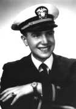
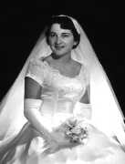

Samuel Kraus (1925)
(2) 1925, With mother Betty (Braelow) Kraus.
(2) 1925, With mother Betty (Braelow) Kraus.
(2) 1925, 1 y, with mother Betty (Braelow) Kraus, 24 y.

(2b) 1945, c., With family.
(2) 1946, c., With mother Betty (Braelow) Kraus.
1948, c.

(6) 1952, c., At wedding dinner.
1954, Wife Joan.